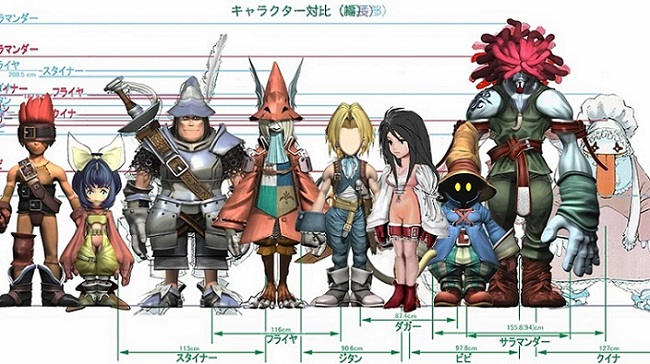
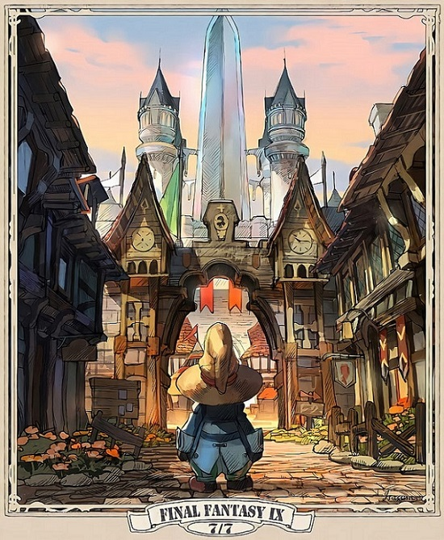
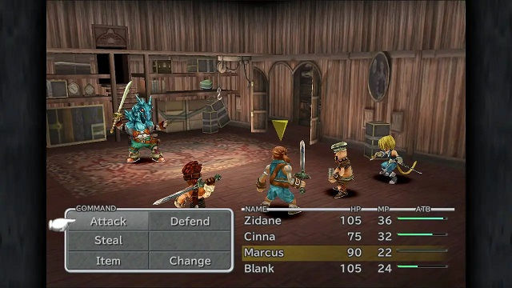

Final Fantasy IX is a 2000 role-playing video game developed and published by Square for the PlayStation video game console. It is the ninth game in the main Final Fantasy series. The plot focuses on a war between nations in a medieval fantasy world called Gaia. Players follow a thief named Zidane Tribal who kidnaps princess Garnet Til Alexandros XVII as part of a ploy by the neighboring nation of Lindblum. He joins Garnet and a growing cast of characters on a quest to take down her mother, Queen Brahne of Alexandria, who started the war.
  